ALOGNON
Timothé.
Security &
Networks.
Passionné par la sécurité des infrastructures réseau et l'administration système Linux/Windows. En quête de mon premier stage en cybersécurité - Admin IT, SOC analyst ou Technicien Réseaux Informatiques.

Je m'appelle Timothé ALOGNON, étudiant en 3ème année de cybersécurité à Knowbridge University Institute. Titulaire d'un Bac D en 2024 au Togo, je me spécialise dans la sécurité des infrastructures réseau et l'administration système Linux/Windows.
Mon approche est orientée pratique : je construis des labs, configure des services réels en simulation (Cisco Packet Tracer, GNS3, VMware, VirtualBox, Windows Server, Linux, Kali Linux) ou non, et documente chaque étape pour constituer un rapport technique.
Objectif à court terme : décrocher un stage en sécurité réseau ou en administration système pour mettre à profit mes compétences en monitoring, hardening, maintenance et réponse aux incidents.
My name is Timothé ALOGNON, a 3rd-year cybersecurity student at Knowbridge University Institute. Graduated with a Baccalaureate D in 2024 in Togo, I specialize in network infrastructure security and Linux/Windows system administration.
My approach is hands-on: I build labs, configure real services in simulation (Cisco Packet Tracer, GNS3, VMware, VirtualBox, Windows Server, Linux, Kali Linux) or not, and document each step to create a technical report.
Short-term goal: secure an internship in network security or system administration to leverage my skills in monitoring, hardening, maintenance and incident response.
| Statut | Ouvert à un Stage |
| Formation | Bac+3 Cybersécurité |
| Focus | Sécurité réseau / Administration système |
| OS principal | Linux / Windows |
| Langues | Français · Anglais |
| Localisation | Lomé, Togo |
| Status | Open to Internship |
| Education | Bachelor+3 Cybersecurity |
| Focus | Network security / System administration |
| Main OS | Linux / Windows |
| Languages | French · English |
| Location | Lomé, Togo |
Configuration complète d'une infrastructure réseau sous CentOS 8 : DNS avec BIND (zones forward/reverse), serveur web Apache HTTP/HTTPS avec TLS, SSH sécurisé avec clés, NTP et FTP. Documentation détaillée sur GitHub avec walkthroughs complets.
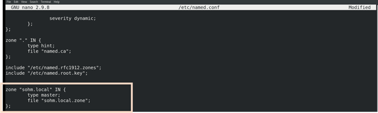
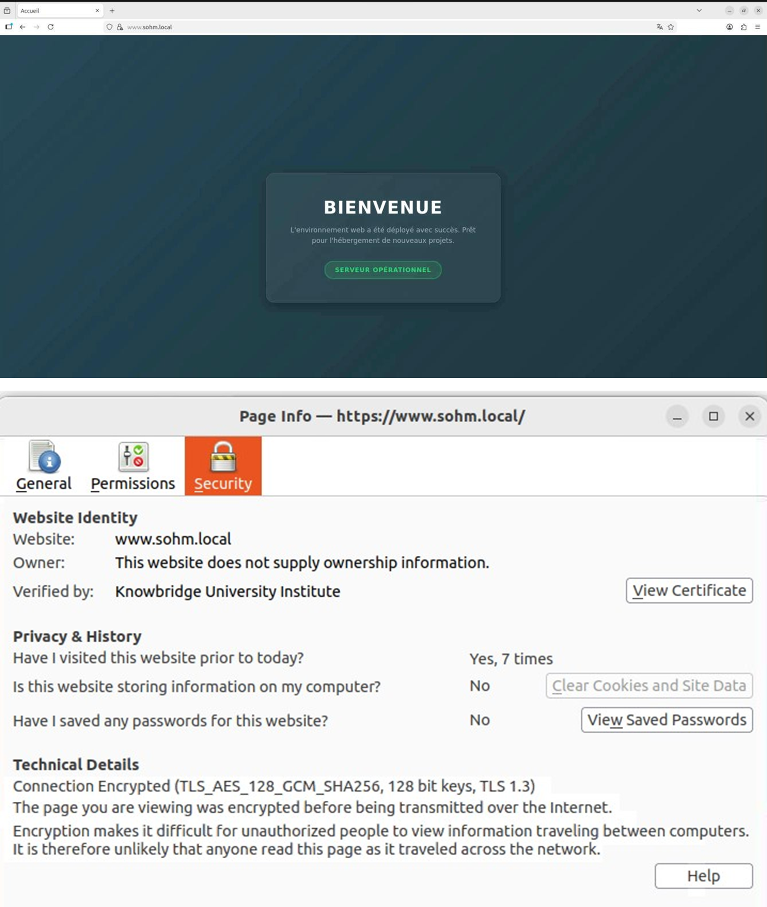
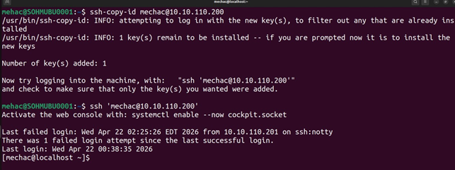
Configuration d'un réseau multi-sites de campus intégrant 3 grandes zones. L'objectif est de répondre aux besoins de connectivité, de sécurité et de redondance du Campus avec du routage dynamique OSPF authentifié et des règles de sécurité pour assurer une haute politique de moindre privilège.
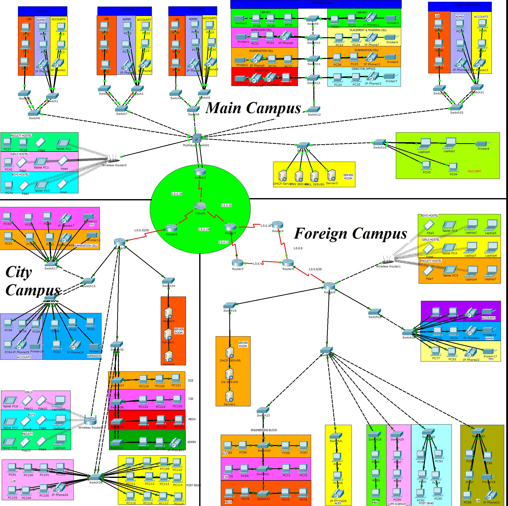
Déploiement complet d'un SOC avancé avec un SIEM open source et une infrastructure de collecte de logs et d'alertes. Ceci part de l'analyse des données (Logs) au declenchement d'une alerte ; la creation des cas et l'analyse aves des CVEs et des signature d'attaques ; le traitement des cas et l'envoie des alertes aux équipes compétentes pour finir avec le partage des IoCs sur MISP
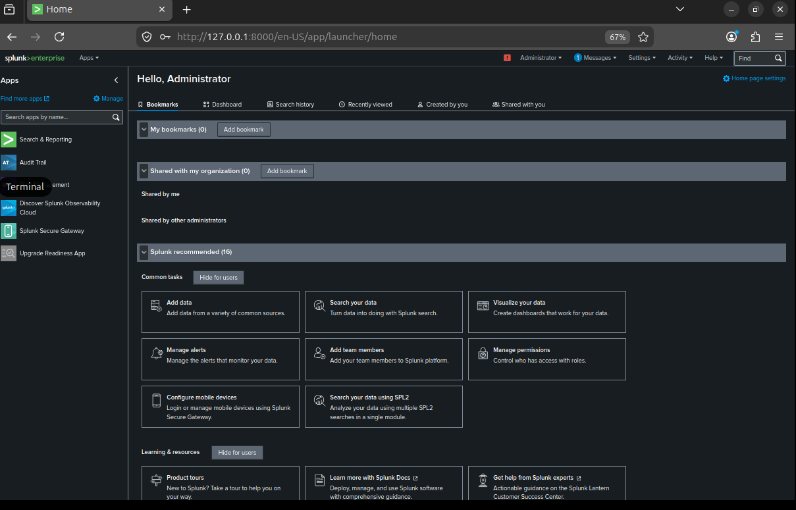
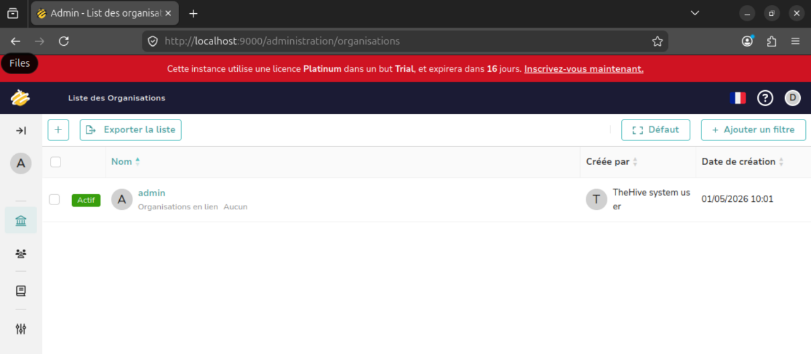
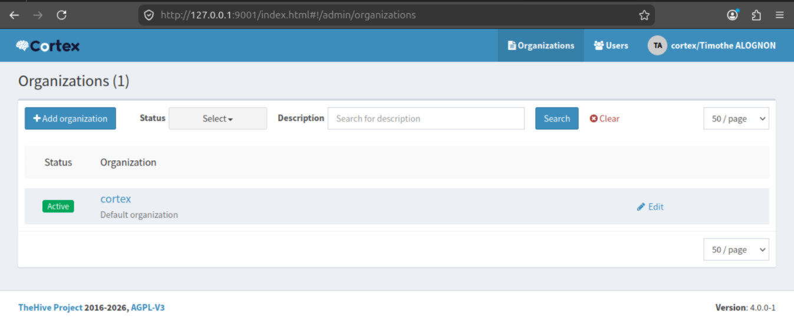
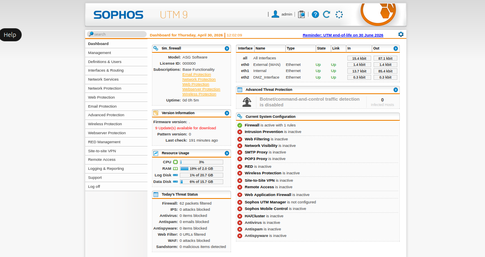
Configuration avancée de parefeu Fortigate et Sophos UTM 9 pour sécuriser un réseau de trois zones WAN,LAN et DMZ avec des protection commes les IDS/IPS , VPN , NAT et d'autres protections.
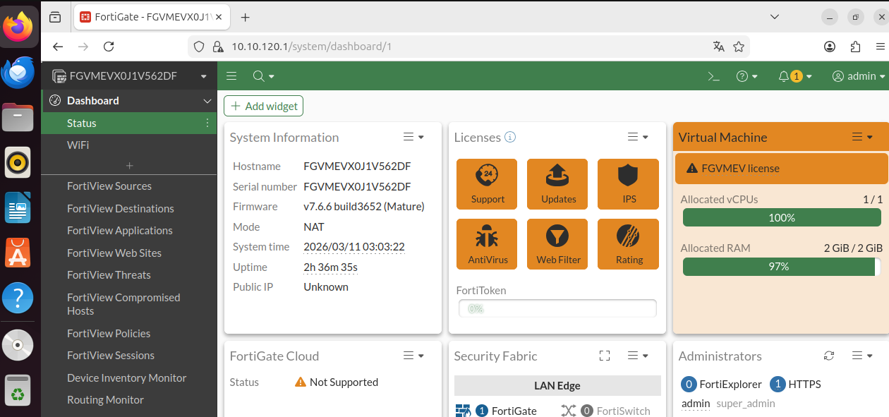
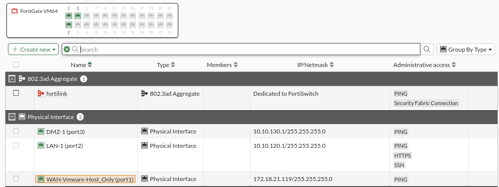
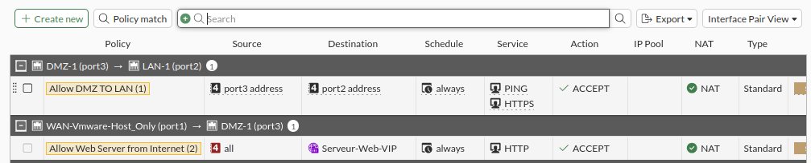
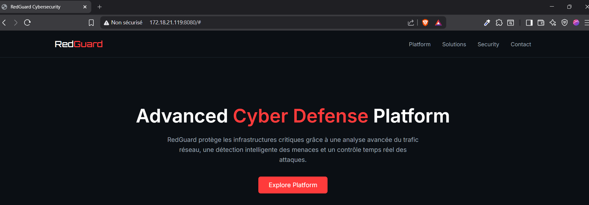
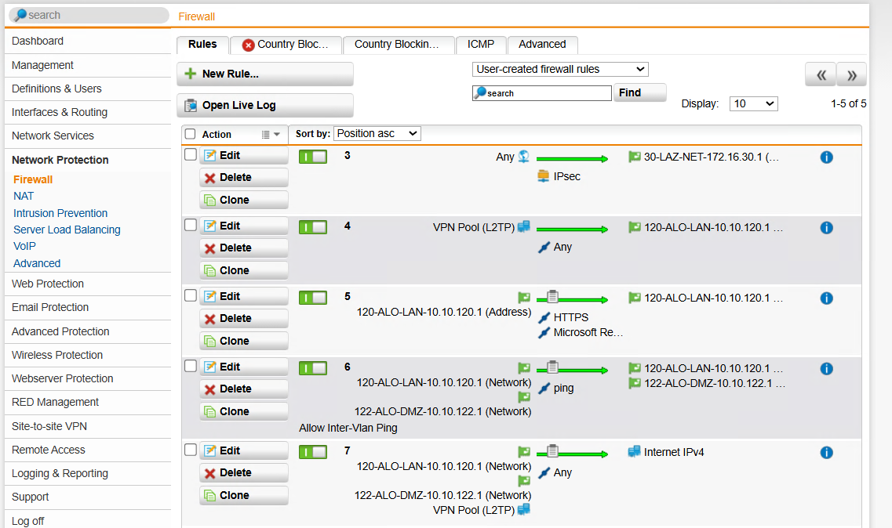
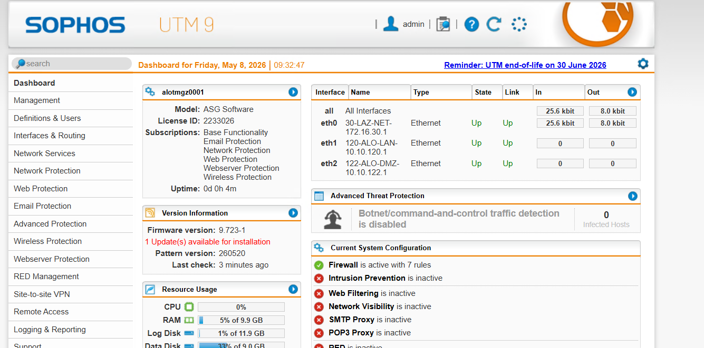
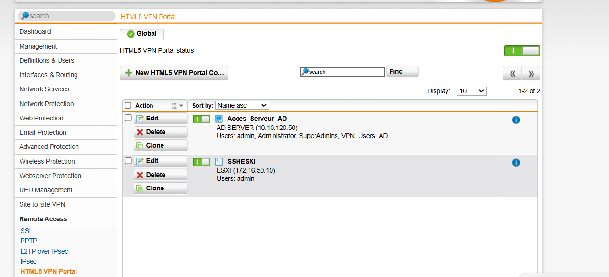
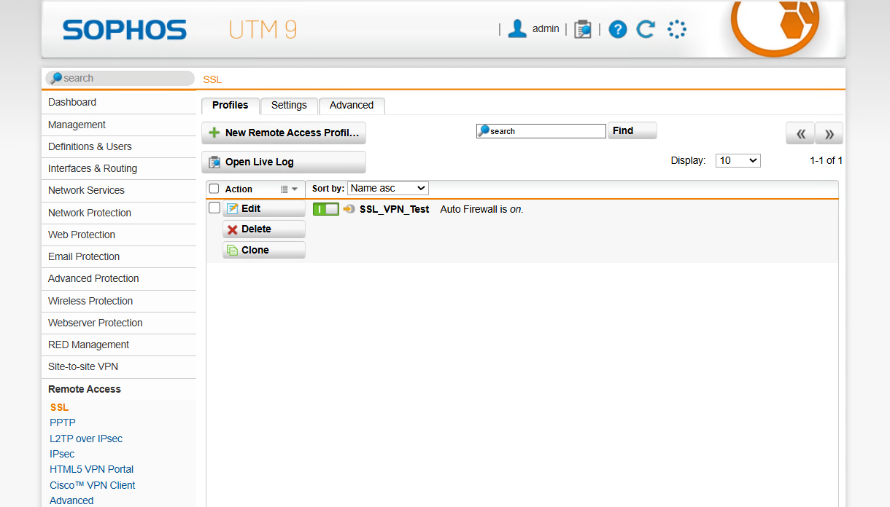
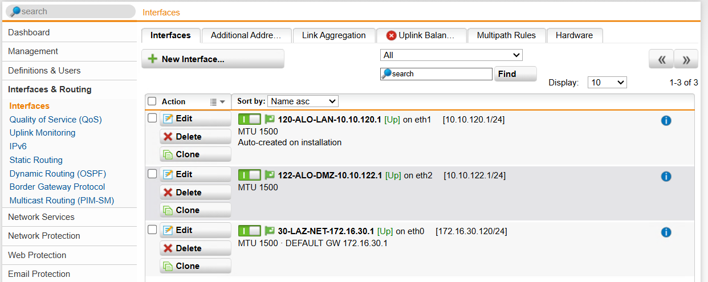
Investigation forensique d'une compromission bancaire Sankofa impliquant des artefacts cryptographiques faibles (tokens JWT avec alg:none, sessions Base64-encoded, logs proxy). Identification de 5 défaillances cryptographiques selon OWASP Top 10 2021 A02:2021, cartographie des contrôles manquants, et évaluation de l'impact réglementaire sous NDPA 2023 §40. Livré 4 rapports incluant une stance éthique basée sur les canons ISC² Code of Ethics.
- D1 — Crypto Failure Mapping (5 vulnerabilities, OWASP classification)
- D2 — Decoded Artefact Appendix (Base64/JWT payloads analyzed)
- D3 — Five Controls the Board Should Approve (remediation roadmap)
- D4 — Ethics Stance (ISC² Canon III & IV analysis)
Audit de sécurité complet de l'application web legacy PHP /legacy-admin/ de Sankofa. Découverte de 11 vulnérabilités critiques et hautes incluant SQL Injection (UNION-based), Reflected XSS, XXE (External Entity Injection), JWT algorithm confusion (alg:none bypass), et Open Redirect. Chaînage de 4 exploits pour accès non-autorisé menant à l'exfiltration de 312 enregistrements clients (~₦63M NGN). Scoring CVSS 3.1 avec vecteurs d'attaque documentés et recommandations de remediation priorisées.
- D1 — Finding Catalogue (11 vulns with OWASP/CWE classification)
- D2 — Exploit Chain & Impact Analysis (4 hops, CVSS scoring)
- D3 — Formal Penetration Test Report (executive summary, remediation roadmap)
- D4 — Ethics Stance (responsible disclosure, ISC² Code compliance)
Investigation forensique complète d'une compromission de workstation finance (10.0.1.87) impliquant un accès SSH depuis un nœud Tor, escalade de privilèges via sudoers misconfiguration (GTFOBins shell-escape avec less), installation de 3 mécanismes de persistance (hook .bashrc, cron caché en mémoire, autostart XDG), beacon C2 HTTPS toutes les 3 minutes, et exfiltration de 312 enregistrements clients via SCP (31KB, ~₦63M NGN). Analyse de memory dump (Volatility 3), corrélation syslogs/netflow/SIEM, mapping de 11 techniques MITRE ATT&CK, extraction de 13 IOCs au format STIX 2.1, et rapport NIST 800-61r2.
- D1 — Process Triage (3 suspicious processes, false-positive ruling)
- D2 — Incident Timeline (12 events, initial access → containment)
- D3 — IOC List (13 indicators + STIX 2.1 bundle)
- D4 — MITRE ATT&CK Technique Map (11 techniques across 7 tactics)
- D5 — Formal Incident Report (6 pages, CISO/Legal-ready, NIST PICERL)
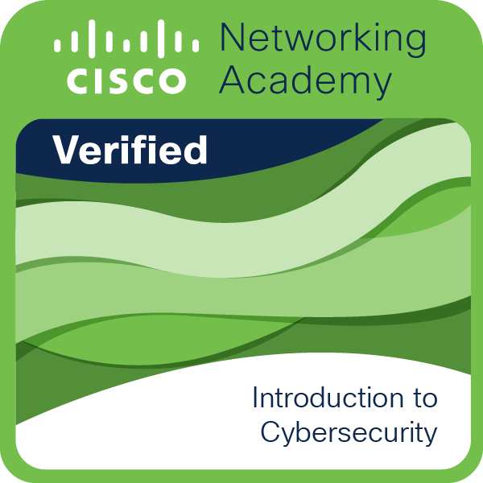
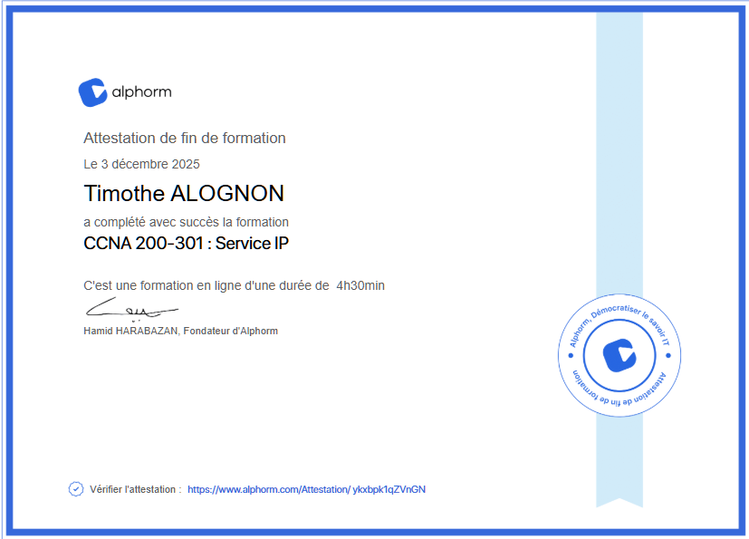
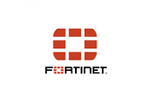
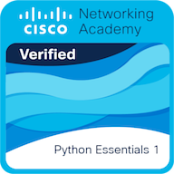
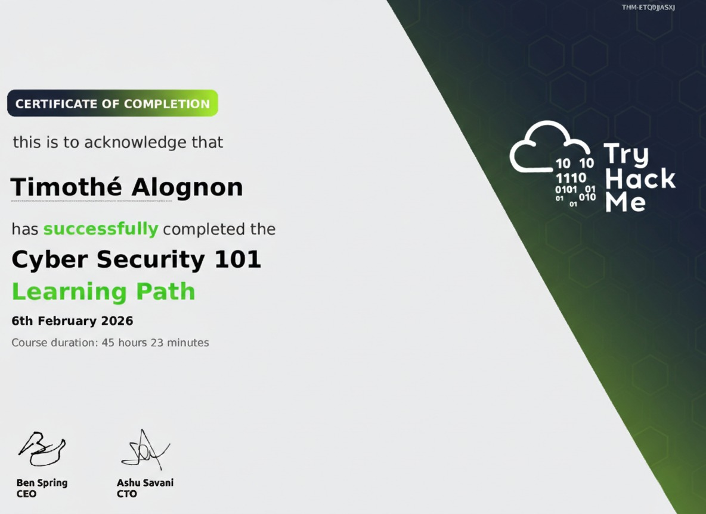
Je suis à la recherche d'un stage en cybersécurité,sécurité réseau ou
administration système.
N'hésite pas à me contacter pour
discuter d'une opportunité ou d'un projet collaboratif.